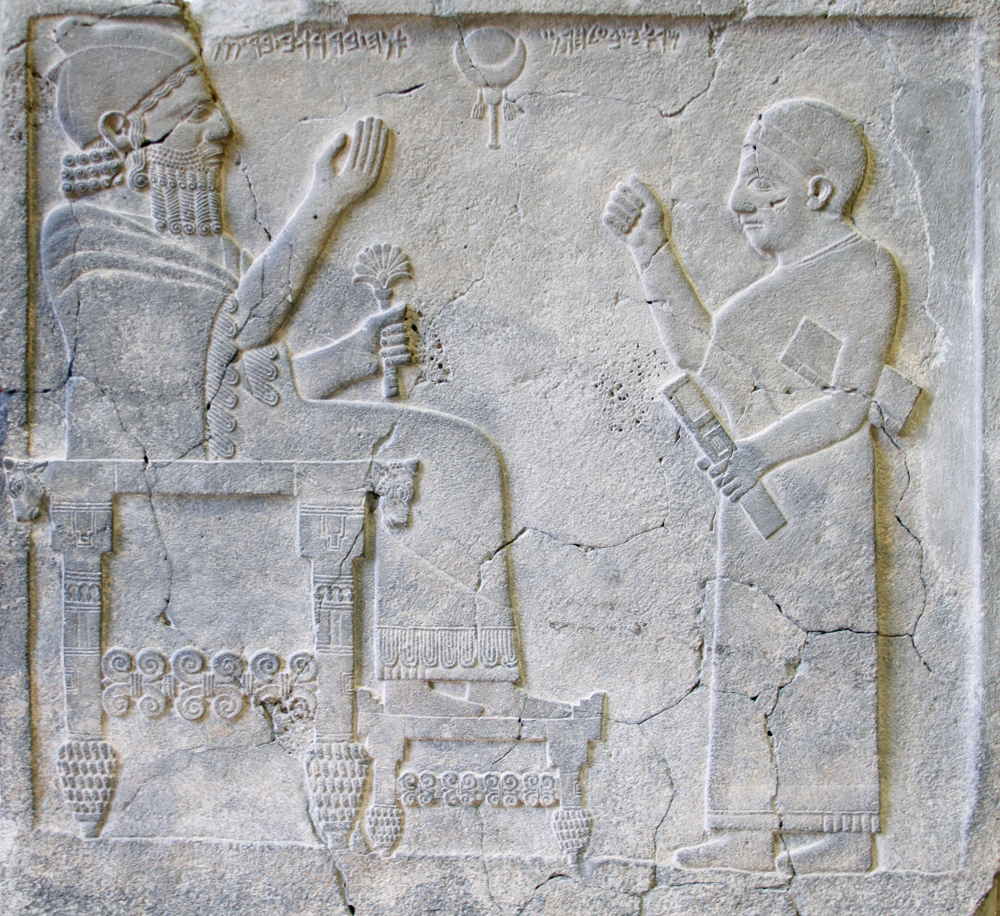

כִּסֵּא kissēʾ – throne
Semantic Fields:
Kingship
Author(s):
Alison Salvesen
First published: 2024-10-18
Citation: Alison Salvesen, כִּסֵּא kissēʾ – throne,
Semantics of Ancient Hebrew Database (sahd-online.com), 2024
Introduction
Grammatical Type: noun masc.
Occurrences: 135x HB (4/85/46); 5x Sir; 25x Qum; 0x inscr. (Total: 165).
- Torah: Gen 41:40; Exod 11:5; 12:29; Deut 17:18;
- Nebiim: Judg 3:20; 1 Sam 1:9; 2:8; 4:13, 18; 2 Sam 3:10; 7:13, 16; 14:9; 1 Kgs 1:13, 17, 20, 24, 27, 30, 35, 37 (2x), 46, 47 (2x), 48; 2:4, 12, 19 (2x), 24, 33, 45; 3:6; 5:19; 7:7; 8:20, 25; 9:5 (2x); 10:9, 18, 19 (2x); 16:11; 22:10, 19; 2 Kgs 4:10; 10:3, 30; 11:19; 13:13; 15:12; 25:28 (2x); Isa 6:1; 9:6; 14:9, 13; 16:5; 22:23; 47:1; 66:1; Jer 1:15; 3:17; 13:13; 14:21; 17:12, 25; 22:2, 4, 30; 29:16; 33:17, 21; 36:30; 43:10; 49:38; 52:32 (2x); Ezek 1:26 (2x); 10:1; 26:16; 43:7; Jon 3:6; Hag 2:22; Zech 6:13 (2x);
- Ketubim: Pss 9:5, 8; 11:4; 45:7; 47:9; 89:5, 15, 30, 37, 45; 93:2; 94:20; 97:2; 103:19; 122:5 (2x); 132:11, 12; Job 26:9; 36:7; Prov 9:14; 16:12; 20:8, 28; 25:5; 29:14; Lam 5:19; Est 1:2; 3:1; 5:1; Neh 3:7; 1 Chron 17:12, 14; 22:10; 28:5; 29:23; 2 Chron 6:10, 16; 7:18; 9:8, 17, 18 (2x); 18:9, 18; 23:20;
- Sira: Sir 10:14A; 11:5aA,B; 11:5bB; 40:3B; 47:11B;
- Qumran: 3Q15 (Copper Scroll) XI:5 (כסה); 4Q161 (4QpIsaa) fr8-10:19 (כ]סא); 4Q174 (4QFlor) fr1-2.i:10; 4Q215a fr1.ii:10; 4Q252 (4QCommGena) 5:2; 4Q282c fr1:5; 4Q405 (4QShSh) fr20ii-22:2, 8; fr23i:3; 4Q418 fr86:4; 4Q419 fr1:9; 4Q434 fr2:7; 4Q491 (4QMa) fr11.i:12; 4Q504 (4QDibHama) fr1-2Riv:7; 4Q511 (4QShirb) fr2.i:10; 4Q521 (4QMessApoc) fr2.ii+4:7; 4Q525 fr14.ii:2; 11Q5 (11QPsa) 26:11; 11Q17 (11QShSh) 5:8; 7:2, 11; 10:7; 11Q19 (11QTemplea) 56:20; 59:14; 59:17 (= 4Q524 / 4QTempleb fr6-13:1).
1. Root and Comparative Material
A.1 The word כִּסֵּא and its cognates are found very widely in all Semitic languages. It derives ultimately from Sum. gu-za, ‘seat’, via Old Akk. kussium (= Standard Bab. kussû), ‘throne, saddle, stool’ (e.g., Ellenbogen 1962:89; Murtonen 1989:235). There may also be some relation to the Sum. verb guz, ‘cower, squat, be lowered’, etc., and though J. Black (personal communication) doubts this, he supports the Sum. etymology against the objections of Kaufman and Lipiński (1988:67).
A.2 The variant Akk. spelling with -rs- for -ss- is the normal form in Aram., and represents the dissimilation of sibilants to a liquid plus sibilant (Salonen 1963:58; Lipiński 1988:67).
A.3 Lipiński (1988:67) explains the Heb. vocalization as due to assimilation of the vowel of the first syllable (u) to the vowel of the second syllable (i), and Murtonen suggests that the original Ancient Hebrew form was KUSʾ. The suffixed form (ου)χεσσω appears in the transliteration column of the Hexapla of Ps 89:30, 37 (Murtonen 1988:189).
A.4 Ug. ksʾu, ‘throne, seat, saddle’ (DULAT3, 456); Phoen. ksʾ; Neo-Punic ksʾh; Ancient Heb. and Rabbinic Heb. כִּסֵּא, ‘seat, stool, throne’.
A.5 In Aram. the geminated sibilants were dissimilated, -ss- to -rs-, hence Zinjirli כרסא, BAram. כָּרְסֵא, and cf. ‘Damascus’, דַּמֶּשֶׂק > דַּרְמֶשֶׂק in late BHeb. (1/2 Chron) and Aram. However, Fraenkel (1960:78-79) argues that the Resh is a lengthening sound (Dehnlaut), and compares other roots in Aram. that appear to have had a Resh introduced in the middle when compared with cognates in Arab. The word is also found in Old Aram., Imperial Aram., Egyptian Aram., Jewish Aram. (כּוּרְסְיָא), ‘seat, privy’, Syr. and Christian Palestinian Aram. (ܟܘܪܣܝܐ, kursyā), ‘throne, head of region, bishop’s seat’, Mandaic (kursia), ‘throne’.
A.6 Arab. kursī, ‘throne, seat, chair’, of ruler, God, bride.
A.7 South Semitic languages: Tigre kursī, ‘little bed, seat’, Tigri kōras, Mehri karsī, ‘chair, rifle butt’, Shauri kersī, Socotori korsiy, ‘throne’, Harari kursi, ‘chair, lectern’, though Leslau (1958:27) says that the Harari is a loanword from Arab,; Bedouin kursi, ‘chair, bench’, Somali kursi, ‘chair’, Saf. kōrō, ‘saddle’, Hausa kujēra, ‘chair’.
B.1 Kaufman (1974:28) objects to a Sum. origin, stating that the doubled sibilant (ss) and ‘final Aleph’ are inexplicable on the hypothesis of a loan from Sum.: rather the Sum. word could conceivably be a borrowing from Akk. He goes on to argue that if the NWSem. languages borrowed it in turn from Akk., it would have to be an early loan, since the Akk. word has a final uncontracted diphthong only in Old Akk. and Old Ass. But if the Akk. is not < Sum., all the NWSem. languages may have obtained the word from another non-Sem. source, independently Kaufman (1974:28; and see Salonen 1963:58). A Semitic etymology is just possible (e.g., *ksî > Akk. ksû, ‘tie, bind’: see Salonen 1963:58, who points to the earliest Mesopotamian seats, which are tied bundles of reeds or rushes), but the form is an unusual one for Sem. Perhaps *kussiʾ is a foreign or substrate word, hence the odd Ug. spelling kśʾu, using a sibilant normally reserved for foreign words (Kaufman 1974:29; DULAT3, 462; Tropper, UG, 45, 103).
Lipiński (1963), too, is dubious about a Sumerian etymology on account of the dual spelling of the word in syllabic script: Akk. kussû(m) or kussiʾum. However, according to J. Black (personal communication) Old Akk., Old Bab., Old Ass. kussium contracts naturally to Standard Bab. kussu, which resolves Lipiński’s problem. Regarding Kaufman’s objections, Black’s response is that the doubled sibilant and uncontracted diphthong are not inexplicable, just rather unusual, and that the Akk. is indeed a loanword from Sum.
7. Art and Archaeology
A.1 Thrones are very frequently represented in the Ancient Near East, especially in Egyptian and Assyrian art, and these represent the two main styles. For thrones of approximately biblical date and provenance, see Broshi (1962:219-20): an Egyptian-style round-backed throne flanked by sphinxes, found in Israel, and the similar one on the Ahiram sarcophagus (see below and ANEP 158, #458). Metzger (1985:II, figure 271A) provides a drawing of a throne with lion figures on the arm rests, belonging to Rameses III. There is an Assyrian-style throne with cedar cone feet, scroll work on stretcher, and straight backrest on the Bar-Rakib stele (ANEP 158 #460). See also Keel (1977, figures 111, 113, 114, 115).
Ahiram sarcophagus, Byblos, 10th cent. BCE?
https://en.m.wikipedia.org/wiki/

King Bar-Rakib with his secretary, Zincirli, ca. 730 BCE
https://commons.wikimedia.org/wiki/
See also the following websites:
https://www.imj.org.il/ (Megiddo 1300-1130 BCE)
https://mainzerbeobachter.com/ (Ugarit 14th/13th cent. BCE)
8. Conclusion
(For good general coverage of the concept of throne, see Brettler 1989:81-85).
A.1 כִּסֵּא is probably derived ultimately from Sum. gu-za, via Akk. kussû.
A.2 כִּסֵּא is intrinsic to the notion of kingship to a much greater degree than עֲטָרָה, נֵזֶר, כֶּתֶר or אֶצְעָדָה. ‘Throne’ stands for ‘regal power’ in Gen 41:40. ‘To sit on the throne’ means ‘to be king’, and is synonymous with מלך and משׁל. It is an expression used of both human kings and God, and is absolutely central to the concept of kingship both symbolically and literally, with a significance similar to that of ‘crown’ and ‘coronation’ in English.
A.3 God’s throne is located in the sanctuary, and at a later period in the heavens. However, although he is often described as sitting upon the cherubim, the term כִּסֵּא does not appear in this exact context; cf. Ps 61:8, Isa 10:13 of kings where כִּסֵּא is not mentioned.
A.4 Only Solomon’s כִּסֵּא is described in detail (1 Kgs 10:18-20), and we can only speculate about the form of other thrones and seats, though there are plenty of Ancient Near Eastern representations of ‘Sitzmöbel’.
A.5 כִּסֵּא in the sense of an ordinary seat exists, but does not often occur. It appears to be understood in 1 Kgs 13:20, Est 6:10, Judg 4:5, but ישׁב, in the sense of sitting could mean that the subject sat on the floor or ground (as implied in Judg 13:9, and stated in Jer 25:5; 35:15; possibly at 2 Kgs 6:32) or on a bed. When a chair is mentioned it may be a significant detail, indicating the honour due to and possibly the function and age of the sitter, as with Eli and Bathsheba.
For this entry, see further Alison Salvesen, ‘כִּסֵּא’, in: T. Muraoka (ed.), Semantics of Ancient Hebrew (AbrNSup, 6), Leuven: Peeters, 1998, 44-65, 146-47 (Printed publications).
Bibliography
Marc Zvi Brettler, God is King: Understanding an Israelite Metaphor (JSOTSup, 76), Sheffield: JSOT.
Magen Broshi, ‘כִּסֵּה ,כִּסֵּא’, in E.L. Sukenik et al. (eds.), Encyclopaedia Biblica (אנציקלפדיה מקראית), IV:216-20.
Maximilian Ellenbogen, Foreign Words in the Old Testament: Their Origin and Etymology, London: Luzac and co.
Meir Fraenkel, ‘Bemerkungen zum hebräischen Wortschatz’, HUCA 31:55-102.
Stephen Kaufman, The Akkadian Influences on Aramaic, Chicago: Chicago University Press.
Othmar Keel, Jahwe-Visionen und Siegelkunst: Eine neue Deutung der Majestätsschilderung in Jes 6, Ez 1 and 10 und Sach 4 (SBS 84/85), Stuttgart: Katholisches Bibelwerk.
Wolf Leslau, Ethiopic and South Arabic Contributions to the Hebrew Lexicon, Berkeley: University of California.
Édouard Lipiński, ‘Yahweh malak’, Bib 44:405-60.
Édouard Lipiński, ‘Emprunts suméro-akkadiens en hébreu biblique’, ZAH 1:61-73.
Martin Metzger, Köningsthron unf Gottesthron: Thronformen und Throndarstellungen in Ägypten und im Vorderen Orient im dritten und zweiten Jahrtausend vor Christus und deren Bedeutung für das Verständnis von Aussagen über den Thron im Alten Testament (AOAT, 15), 2 vols., Butzon & Berger: Kevelaer; Neukirchen-Vluyn: Neukirchener.
A. Murtonen, Hebrew in its West Semitic Setting: A Comparative Survey of Non-Masoretic Hebrew Dialects and Traditions, Part 1: A Comparative Lexicon; Section Ba: Root System; Hebrew Material, Leiden: Brill.
A. Murtonen, Hebrew in its West Semitic Setting: A Comparative Survey of Non-Masoretic Hebrew Dialects and Traditions, Part 1: A Comparative Lexicon; Section Bb: Root System; Comparative Material and Discussion, Leiden: Brill.
Armas Salonen, Die Möbel des alten Mesopotamien nach sumerisch-akkadischen Quellen: Eine lexikalische und kulturgeschichtliche Untersuchung, Helsinki: Suomalainen Tiedeakatemia.